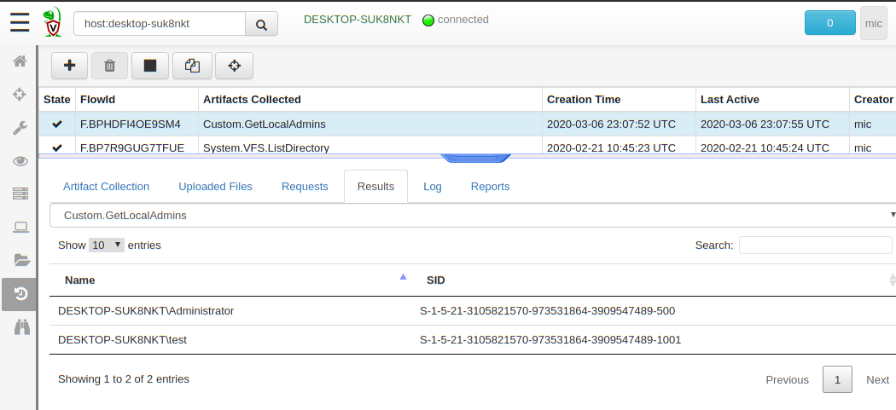
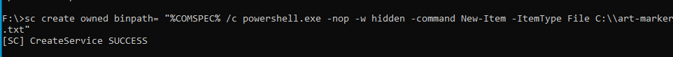
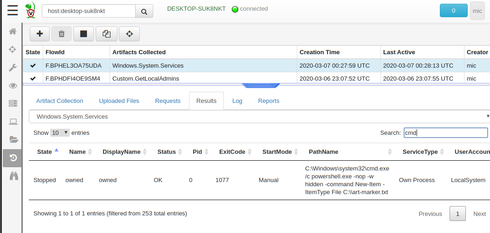
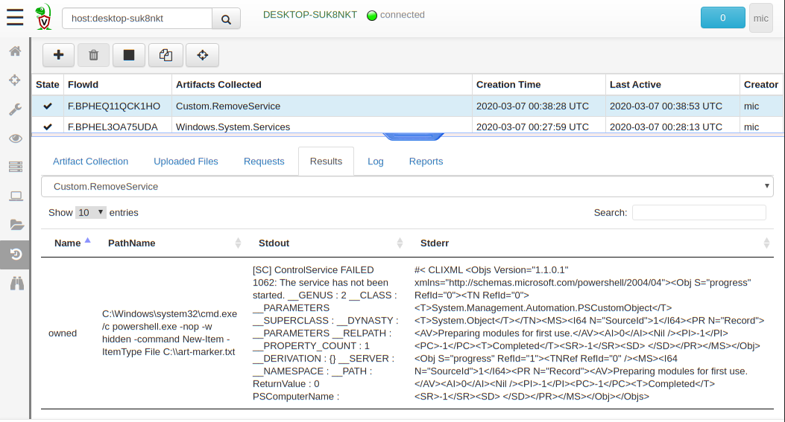

Velociraptor is a unique endpoint visibility tool because it provides the ability for users to write custom, tailored queries using the Velociraptor Query Language (VQL). Having a powerful query language right at the endpoint gives our responders unprecedented flexibility, and the ability to leverage the experience of other analysts within the vibrant Velociraptor community.
VQL is a powerful language but was never designed to be a full featured programming language — it is deliberately kept simple and easy to use. VQL is essentially a glue language that allows more complete capabilities provided by VQL plugins to be strung together into a more functional query.
For example, raw MFT parsing is provided by the parse_mft() plugin which emits a row for each parsed mft entry. A VQL query can then filter out relevant MFT entries and potentially get a copy of the file, or attempt to recover deleted files (as described in our previous article.
Although VQL is already very well documented elsewhere, for this article I will just outline the basic structure of a VQL query:
SELECT x, y, z FROM plugin() WHERE x = 1
In the above, the query will run the VQL plugin which will produce a set of rows (A row is simply an object with columns and values). The query will then filter each row by the condition “x=1” and for matching rows, extract the columns x, y and x into the result set.
The simplicity of this language allows analysts to pick up Velociraptor in a short time and make powerful use of it. However, the actual data is generated by the plugin itself — how does one extend VQL to include new functionality?
One way to extend VQL is through defining Artifacts. Artifacts are a way to encapsulate other VQL queries in YAML files which can then be shared and added to Velociraptor at any time. Artifacts have a name by which they can be accessed in other queries. For example
SELECT Name, SID FROM Artifact.Windows.Sys.Users()
The above query will simply run the artifact’s VQL query and emit each user on the system. We can now use it from our own query, filter it etc.
While the above method is useful, it can only really wrap existing capabilities in Velociraptor — We are just wrapping an existing VQL query in an artifact reusing existing plugins, not extending the basic capabilities of Velociraptor.
Although VQL already comes with a lot of built in plugins, sometimes what we actually want is not built into Velociraptor itself. This might be because we never thought of the need (please file a bug for feature requests!) or because it simply would not make sense to include the functionality directly inside Velociraptor.
For example, suppose we wanted to list all the users that belong to the local administrator group on Windows. This information is obviously important because local administrators are extremely powerful accounts, and are sometimes granted to users who need administrator access to their local workstation. Often this access is not recorded or tracked properly. Even worse, sometimes local user accounts are created with local administrator group membership allowing those accounts to be logged into without AD oversight or controls. See this, and this for more information.
While Velociraptor does not offer the functionality to query local groups, the functionality is readily available via PowerShell Get-LocalGroupMember commandlet.
Get-LocalGroupMember -Group “Administrators”
Let’s turn this Powershell commandlet into a Velociraptor artifact
The powershell script simply runs the commandlet and extracts the SID and the username, converting the result to JSON. On the VQL size we encode the script and shell out to Powershell, then decode the output from JSON and produce VQL rows.

If we now collected this artifact as a hunt from our entire deployment we could have a listing of all local admin accounts within minutes from thousands of endpoints making it trivial to audit.
The whole VQL query and included powershell are now wrapped in an artifact, which can be called transparently from other VQL statements, further filtered etc. In fact using this methodology encapsulates the exact way the Artifact works, so that callers of this artifact do not really care (and cant really tell) that PowerShell is used instead of having a built in Velociraptor command.
We effectively just extended the capabilities of the endpoint tool without needing to rebuild or deploy a new version of Velociraptor! This allows for unprecedented flexibility in our DFIR work.
For the next example, suppose we discovered a widespread infection within our network. Typically, the malware installs various methods of re-infecting a host, and a common way is to install a malicious service (See Att&ck Matrix 1035). The Atomic Red Team has an example simulation:

We can collect the Windows.System.Services artifact and identify the malicious service immediately

But now we would like to automatically clean it. We know the malicious service PathName value should match the keyword “marker.txt” (In reality we can come up with other unique keywords for the malicious service). So we just write the following artifact:
The powershell component actually stops, and removes the bad service, while the VQL component runs the Windows.System.Services artifacts, filters out the keyword to identify the malicious service and then calls powershell to remove it.
Now when collecting the artifact, we can see which machines had the malicious service installed, and how the removal went. We can then collect the Windows.System.Services artifact again to check that services were correctly removed.

Running a deployment wide hunt that collects this remediation artifact will automatically remove the bad service from all connected endpoints within a couple minutes. The hunt will then be applied on new endpoints as they come back online.
Ultimately the VQL artifacts just delegate the heavy lifting to Powershell. This means that Velociraptor does not need to implement these feature internally since we can already rely on Powershell’s wide support for many products and system administration tasks. Formatting powershell output in machine readable format (like JSON) allows VQL to emit rows which are indistinguishable from those emitted by built in plugins — they can still be filtered and reused as usual in other VQL statements.
So what advantages does this present over just running remote powershell scripts? Why do we even need Velociraptor at all?
The main advantage is that Velociraptor has much wider reach — endpoints do not have to be accessible over WinRM, i.e. they can be at home or at a coffee shop, instead of having to stay on the corporate network. Since we never need to actually connect to the endpoint, we can reach it even when it is located behind NAT or filtered networks. Some road warrior type users are never present within the corporate LAN.
Additionally, when you run a Velociraptor hunt and the client is not immediately online, the hunt is scheduled until the endpoint comes back online. We can be sure to have wide coverage of our endpoints because we don’t need to chase them and try to remotely access them when they come online (some remote machine connect for minutes a day or at unusual timezones). We just set the hunt and forget it — the endpoint will remove the malicious service when it is ready automatically.
Finally, having the flexibility to encode powershell snippets inside artifacts allows us to develop reusable code. The users of our artifacts don’t really care how it works but can call it and tweak it using other VQL or simply by providing parameters in the GUI. This leads to excellent knowledge sharing and code reusability within the community.
Finally it must be said that remediation is inherently a risky activity. Most artifacts passively collect data from the endpoint, since Velociraptor is primarily an endpoint visibility tool. Deliberately making changes on the system carries with it an inherent level of risk and should be done very carefully. Like the Hippocratic Oath, we must “first, do no harm” (Primum non nocere). For example, if our regular expression selecting the malicious services is too loose we might end up removing many critical services from critical systems! Be sure to test your remediation artifacts first by disabling the actual removal script and seeing how many services we would attempt to remove.